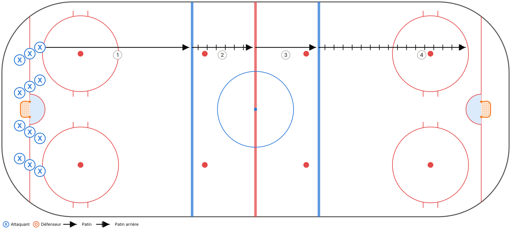
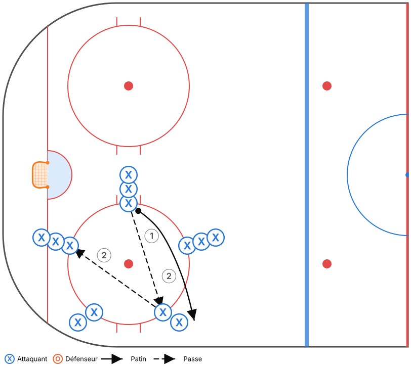
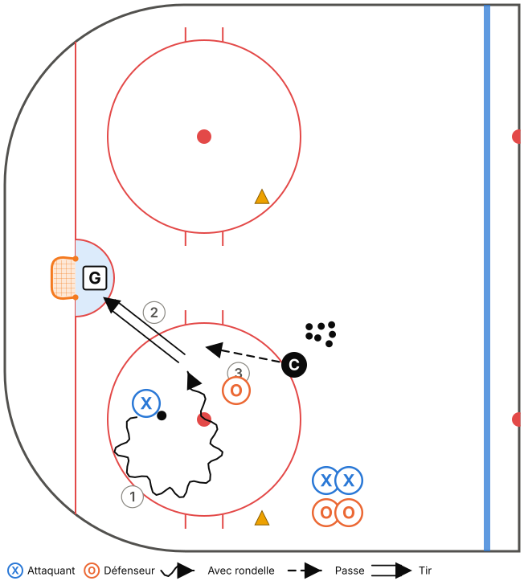
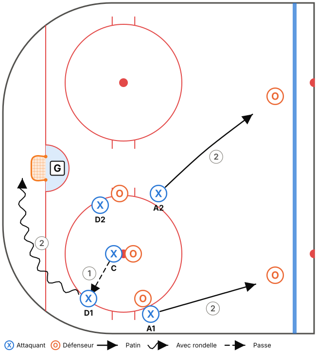
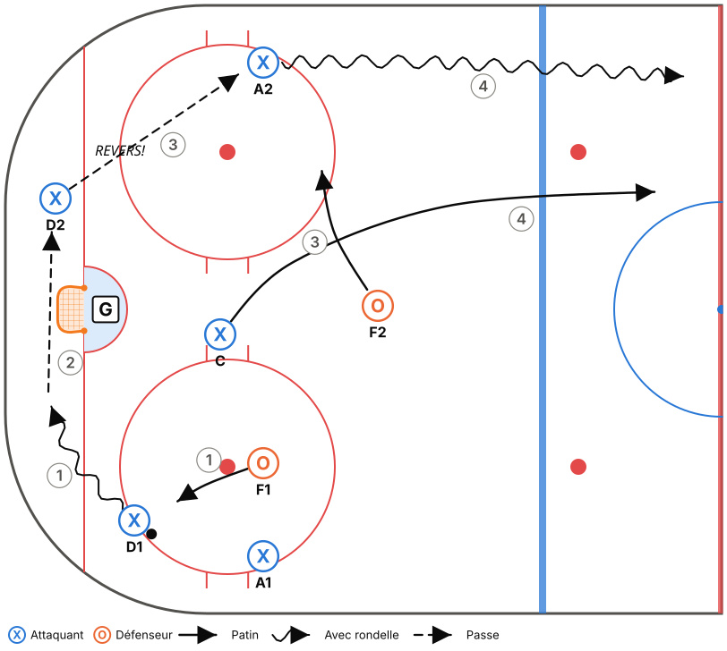
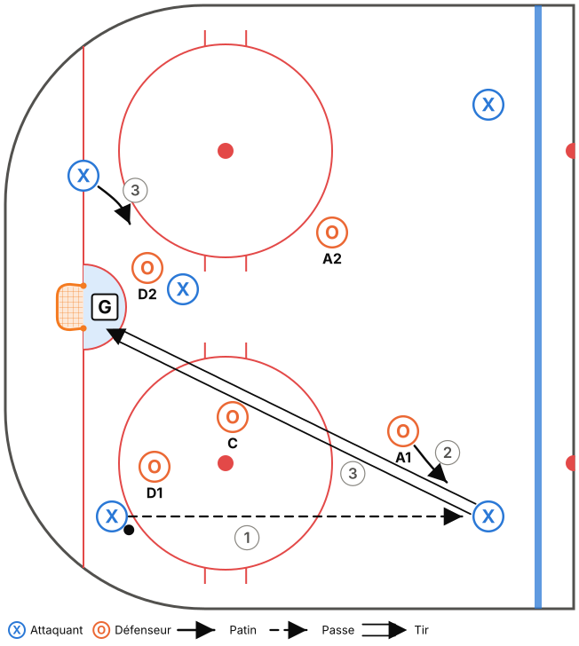

Thème : Sortie de zone sous pression et mises au jeu
Glace : Pleine glace, 50 min (45 min d'exercices + 5 min de consignes et transitions)
Fiche générée à partir de
outils/modeles.js. Pour la modifier, ouvreoutils/plan-pratique.htmlet charge le modèle « M15-C – Semaine 2 ».
Objectifs
- Sortie de zone MUR – VITRE – PROFOND contre une pression.
- Positions aux mises au jeu (défensives et offensives).
- Récupération derrière le filet et réception sur le revers.
Tableau (vestiaire)
Vestiaire (3 min) : positions aux mises au jeu (défensive et offensive). Question : « Qui prend qui? »
Déroulement
| Heure | Code | Exercice | Catégorie | Min | Notes |
|---|---|---|---|---|---|
| 0:00–0:05 | T02 | Transitions aux lignes (pivots avant-arrière) | Technique | 5 | |
| 0:05–0:10 | T05 | Étoile de passes (réception sur le revers) | Technique | 5 | Réception sur le revers obligatoire à la 2e minute. |
| 0:10–0:16 | T12 | Récupération derrière le filet – tête sur l'épaule | Technique | 6 | Options pour M15 : MUR, MILIEU, VITRE. |
| 0:16–0:23 | TI01 | 1c1 bande à bande – contrôle de l'écart | Tactique individuelle | 7 | |
| 0:23–0:29 | TI08 | 1c1 continu dans le coin (petit espace) | Tactique individuelle | 6 | |
| 0:29–0:33 | TC14 | Mises au jeu – positions et exécution | Tactique collective | 4 | |
| 0:33–0:39 | TC02 | Sortie de zone 5c2 contre échec avant | Tactique collective | 6 | Sortie propre sur la VITRE = 1 point, comme une sortie en contrôle. |
| 0:39–0:45 | TC06 | Zone défensive 3c3 bas + 2 pointes | Tactique collective | 6 | Rappel de la Boîte + 1 de la semaine 1. |
Répartition du temps
| Catégorie | Minutes | % réel | Cible Hockey Québec |
|---|---|---|---|
| Technique | 16 | 35,6 % | 35 % ✓ |
| Tactique individuelle | 13 | 28,9 % | 30 % ✓ |
| Tactique collective | 16 | 35,6 % | 35 % ✓ |
Détail des exercices
T02 – Transitions aux lignes (pivots avant-arrière)
Technique · Pleine glace

Objectif : Maîtriser les pivots avant → arrière → avant sans perdre de vitesse.
Organisation : 4 lignes sur la ligne des buts. Départ par vague au sifflet.
- Patin avant jusqu'à la ligne bleue, pivot vers l'arrière.
- Patin arrière jusqu'à la ligne rouge, pivot vers l'avant.
- Patin avant jusqu'à l'autre ligne bleue, pivot vers l'arrière, puis patin arrière jusqu'au bout.
- Au retour, pivoter du côté opposé.
Points clés : Pivoter en regardant toujours le même bout de la patinoire · Pas d'arrêt pendant le pivot · Bâton sur la glace
T05 – Étoile de passes (réception sur le revers)
Technique · Demi-glace

Objectif : Répéter un grand volume de réceptions sur le revers et de passes rapides.
Organisation : 5 files en étoile autour d'un cercle de mise au jeu. Une rondelle, puis deux.
- Le joueur passe à la file opposée (pas à la voisine), puis suit sa passe et va au bout de cette file.
- Après 1 minute, on change de sens.
- Ajouter une 2e rondelle quand ça va bien.
Points clés : Appel : taper la palette sur la glace · Recevoir et passer en 1 ou 2 touches · Passe à plat
T12 – Récupération derrière le filet – tête sur l'épaule
Technique · Zone · Décisionnel (IQ)

Objectif : Récupérer une rondelle derrière le filet en regardant par-dessus l'épaule avant de la toucher.
Organisation : D à la ligne bleue. Coach au centre avec des rondelles. 3 cibles : MUR, MILIEU, REVERS (joueurs ou cônes).
- Le coach lance la rondelle dans un coin ou derrière le filet.
- Le D pivote, patine vers la rondelle et regarde par-dessus son épaule.
- Pendant ce temps, le coach lève une couleur : le D doit passer à l'option correspondante.
Points clés : Tête sur l'épaule AVANT d'arriver à la rondelle · Ramasser la rondelle en mouvement · Passe ferme
TI01 – 1c1 bande à bande – contrôle de l'écart
Tactique individuelle · Demi-glace · Décisionnel (IQ)

Objectif : Défenseur : garder l'écart et pousser à l'extérieur. Attaquant : battre le défenseur.
Organisation : Attaquants dans le coin, défenseurs à la ligne bleue. Un gardien.
- L'attaquant part avec la rondelle, le défenseur recule en patin arrière.
- Le défenseur garde environ 2 bâtons d'écart, puis ferme l'écart en poussant l'attaquant vers la bande.
- L'attaquant cherche à entrer au centre ou à tirer.
Points clés : D : bâton sur la glace, corps entre l'attaquant et le filet · Attaquant : changer de vitesse · Écart constant
TI08 – 1c1 continu dans le coin (petit espace)
Tactique individuelle · Coin · Décisionnel (IQ)

Objectif : Intensité et décisions rapides dans un petit espace.
Organisation : Espace délimité par des cônes dans le coin, petit filet ou filet réel. Des rondelles à côté.
- 1c1, 30 s. Dès qu'un but est compté ou que la rondelle sort, le coach en envoie une autre.
- Rotation des paires.
Points clés : Protéger avec le corps · Changer de direction · Ne jamais abandonner une rondelle
TC14 – Mises au jeu – positions et exécution
Tactique collective · Zone

Objectif : Positions de base aux mises au jeu défensives et offensives.
Organisation : 5c5 à un cercle de la zone défensive, puis de la zone offensive.
- Zone défensive : le centre gagne vers l'arrière, dans le coin vers le D. Les ailiers prennent les pointes, le D récupère et fait la sortie de zone.
- Zone offensive : le centre ramène la rondelle à la pointe. Les ailiers vont au filet, le D tire bas.
- Jouer 15 s après chaque mise au jeu.
Points clés : Chaque joueur sait qui il prend · Réaction immédiate après la mise au jeu · Le centre communique son plan
TC02 – Sortie de zone 5c2 contre échec avant
Tactique collective · Pleine glace · Décisionnel (IQ)

Objectif : Réussir la sortie de zone contre une pression réelle.
Organisation : 5 joueurs en zone défensive, 2 avants adverses font l'échec avant (1-2-2 simplifié).
- Le coach lance la rondelle. Les 2 avants adverses font pression.
- L'équipe en sortie doit dépasser la ligne rouge en contrôle (1 point) ou en dégageant proprement (VITRE : 1 point pour M15).
- Si les attaquants récupèrent la rondelle, ils attaquent le filet.
Points clés : Lire la pression avant de choisir · Le REVERS est libre quand la pression vient du côté fort · Soutien court du centre
TC06 – Zone défensive 3c3 bas + 2 pointes
Tactique collective · Zone · Décisionnel (IQ)

Objectif : Appliquer le système défensif contre une vraie attaque.
Organisation : 3 attaquants en bas de zone + 2 D offensifs aux pointes contre 5 défenseurs. Un gardien.
- Le coach met la rondelle en jeu dans le coin. L'attaque dure 30-40 s.
- Si la défense récupère la rondelle, elle doit sortir de la zone (1 point).
- Si l'attaque marque, elle a 1 point.
Points clés : Communication (J'Y VAIS! / JE COUVRE! / ÉCHANGE!) · Les ailiers ne descendent pas trop bas · Sortir de la zone après la récupération